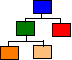
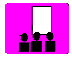

"In the design of large distributed object systems (especially those which use an ORB), it appears that the architecture can often be described by two high-level styles. The first of these is usually referred to as Service-Based and the other could be referred to as Model-Based. The purpose of this workshop is to investigate when, where and how these styles can be usefully applied. "
|  |  | ||||
OT98 Main Web page: 
In the design of large distributed object systems (especially those which use an ORB), it appears that the architecture can often be described by two high-level styles. The first of these is usually referred to as Service-Based and the other could be referred to as Model-Based. The purpose of this workshop is to investigate when, where and how these styles can be usefully applied. Specifically, we will consider:
These topics will be investigated by various design issues based on a simple, distributed car-hire system. Attendees will be split into small groups in which they will do the exercises.
Therefore, the main objective of this workshop is to produce patterns describing the two architectural styles, when
and where they might be applicable, how implementation technologies affect the choice of style, what the
consequences of adopting one style over another might be, etc. We will not look to recommend one style over
another because different business contexts will have different requirements (such as being tied into one
implementation technology or another by historical accident), but to understand the characteristics of the styles
better.
A system is constructed by directly modelling the processes which occur within the system and then by considering the entities involved in these processes. The model of the processes will allow the architect to collect together sets of coherent functions which can be packaged up into reusable, shared service objects. These objects will also provide the potential distribution boundaries.
An object model is constructed without reference to the expected distribution of the objects using techniques such as OMT. This model will tend to focus on the static type diagram allocating the required behaviour to the appropriate object types as required. At a later configuration phase of the project, the distribution of objects is decided.
| Time from start | Activity |
|---|---|
| 0.00 | Introduction to the workshop |
| 0.05 | What do we mean by service-based and model-based? |
| 0.10 | Introduction to the problem domain |
| 0.15 | Exercise - designing within an architectural style Half of the groups will produce a design for the distributed system within the service-based architectural style, the other half within the model-based style. These designs will be quick-and-dirty, relying on instinct and experience.
|
| 0.45 | Feedback and reflection Groups will pair up (one service-based with one model-based) to discuss their solutions. Particularly, discussions will focus on justifying designs to the other groups - reflecting on the intuition and experience that lead to the design produced.
|
| 1.05 | Exercise - implementation technology Two sets of implementation technologies will be described: one based around a CORBA ORB, the other around "guaranteed" message delivery systems and relational database technology. The groups will now consider how one of these technologies might affect the implementation of their design.
|
| 1.15 | Break |
| 1.45 | Exercise continued |
| 2.00 | Feedback and reflection Groups will pair up (one CORBA with one messaging) to discuss how the underlying technology affects the implementation of the design. Again, the objective of the discussions is to reflect on how the choice of implementation technology affects system design and architectural assumptions.
|
| 2.20 | Group reflection Each group will attempt to write a pattern based on their experiences with the service-based and model-based styles (both in the workshop and previously). Specifically they will consider: what are the forces which might lead us to choose to us one style or another? how are these forces resolved by the style? and what is the new context that results from using one of the styles.
|
| 2.45 | Pattern summaries and plenary discussion |
Attendees to this workshop could be anyone who is interested in the requirements or design of distributed systems using OO technologies. A participant should have a reasonable background knowledge across a wide-range of OO issues such as issues relating to distribution, modelling techniques and ORBs, although in depth knowledge of any one technique, development tool, etc is not expected.
Andy Moorley has jointly run successful workshops on subjectivity and 'ORBS and ODBMSs' at OT '96 and '97. Paul Dyson has, with Bruce Anderson, run two successful 'Design variation and architecture' workshops at previous OT conferences. Paul has also presented papers and posters at a number of international conferences including OOPSLA and OOP.
Paul is with Cumulus Systems Ltd., a software house that develops systems for the financial sector. Cumulus is currently designing an integrated front and back office product in a totally OO environment based around an ORB, ODBMS and developed in Smalltalk.
paul@cumulus.co.uk: Cumulus Systems Ltd., 1 High Street, Rickmansworth, Herts. WD3 1ET, UK. Tel: +44.1923.720477Andy is now with JP Morgan (London) where he is working on an OO Derivatives Risk Management system based on Smalltalk, ODBMS and ORB technology. He has both architectural and development roles in this project.
moorley_andy@jpmorgan.com: JP Morgan ,PO Box 161, 60 Victoria Embankment, London. EC4Y 0JP, UK. Tel: +44.171.353.8658.The architecture of both of these system has adopted facets of both approaches.